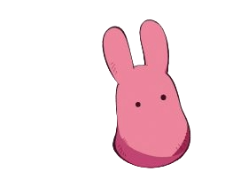
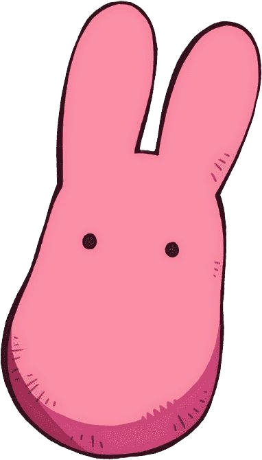
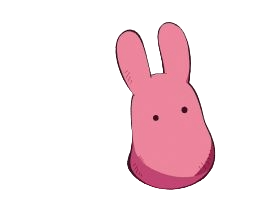
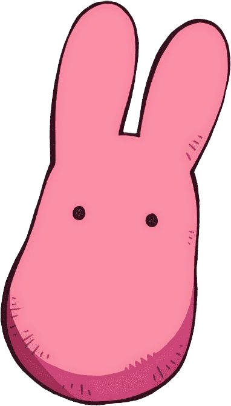
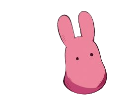
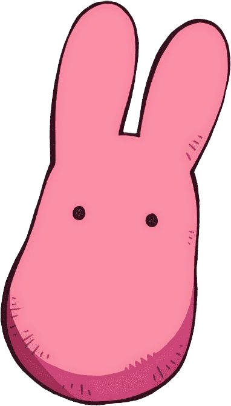
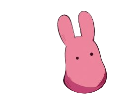
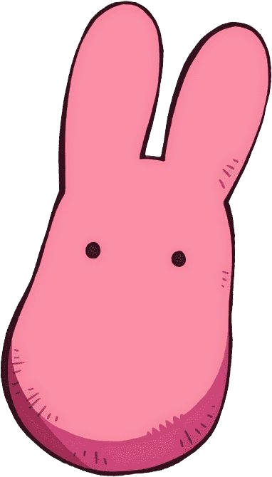

Mokke are a species of supernaturals haunting Kamome Academy.
Personality: They are curious and mischevious creatures. They lure in unsuspecting victims using various trickets. Rumor says that if you see their true form, you'll be killed.But in reality, they are weak and cowardly creatures but to stay alive they had to keep the rumor alive.
Abilities: They accomplish tasks such as delivering mail or playing instruments.
Yashiro Nene is a first-year high school student as Kamome Gakuen's High School Division. She made a contract with Hanako-kun during an incident and now is bound to him and works as his assistant with the supernatural world.
Personality: Nene is a very outgoing and earnest girl who greatly desire who seems to greatly desire the approval of her peers. She is kind to others and sometimes to the point of naiveté. She geninuenly wants to help others and sometimes is willing to risk herself when in danger with supernaturals. But she is insecure, especially regarding her ankles. She is a hopeless romantic that craves having a boyfriend.
Abilities: Nene is able to see supernaturals without any affiliation to them. This is because she has only one year left in her life span. Nene is able to transform into a fish after eating a mermaid scale.She also has the abilities to change the rumors of the supernaturals as she is affilated with one of the Seven Mysteries.
Hanako is a ghost in the old building of Kamome Academy who grants wishes and governs over the Seven Mysteries as the School Mystery No.7 - Hanako-kun of the Toilet
Personality: Hanako is seen as a cheerful, outgoing, and playful ghost. He is mischeivious and likes to play pranks. Despite his youthful appearance, he is the leader of the Seven Mysteries and is maintaining the balance between the supernaturals and humans. He is often seen helping others, especially his human friends. But he doesn't like talking about himself or his past as he doesn't want any negative association.
Abilities: Hanako can commands the haku-jodai (the orbs) verbally by name, to follow instructions. However, he cannot use his haku-jodai in other territories of the seven mysteries without their permission. He has the ability to place seals on items to prevent its full use. He can erase memories and induce people to sleep by pressing on the targets forhead.
Minamoto Kou is a student at Kamome Academy's Middle School Division and a member of a renowned family of exorcists. He is the younger brother of the class President, Teru, and has a younger sister, Tiara.
Personality: Kou is cheerful, direct and tends to jump straight into things without thinking it through. He is often overlooked as a delinquent or rude, but that is not the case. He has a strong sense of justice but he is also open-minded as he started to change his mindset on supernaturals after meeting Hanako.
Abilities: As he comes from a clan of exorcists, he can see supernaturals and interact with them. He is able to use his raiteijou (spirit staff) to turn his spirit energy to lightning.
Mitsuba Sousuke is now a ghost and the representative of the 3rd School Mystery at Kamome Academy. He was a student at Kamome Academy Middle School Division and was a memeber of the photography club before his death.
Personality:Sousuke is a cocky, foul-mouthed,and overly confident in himself, particularly his looks. He also has a tendency to call people rude nicknames and isn't afraid to insult them. He knows how to get on people's good sides and sometimes will act nice if he needs to get on their good side. Despite being rude and loud, Sousuke get noticeably dispirited when talking about his past of being a target of bullying and gets lonely easily. He has a hard time being honest, yet at times he tries to geniunely express happiness and kindness.
Abilities: After consuming Number 3's heart, he became the School Mystery No.3. He can command over the Hell of Mirrors boundary and it will respind to his requests. He is able to access every reflection that was captured within those mirrors and gain information on the past. He has an exoskeleten-like sacrf that is an extension of himself, utilizing them as extra limbs.
Aoi Akane is a first year student at Kamome Academy's High School Division as one of Nene's classmate and the Student Council's Vice President. He is secrelty a Supernatural being on of the Clock Keepers -Mystery No.1. He is the Guardian of the Present.
Personality: Aoi has a huge crush on Akane, and is extremely protective of her. He often lets his affection towrads her overwhelem his sense of reason. He doesn't have any interest with anything other than Akane, and thus oftens acts cynical and sarcastic to everyone else. As he is the Student Council's Vice President, he is a reliable and hardworking student. Aoi bears a deep hatred towards the supernaturals after being tricked in being part of the Clock Keepers for 6-years, and wants to continue living a normal life.
Abilities: Aoi governs the present as the second of the three Clock Keepers. He uses a pocket watch, which he recived once he made a contract with the Clock Keepers to stop time. He can only stop time upto 3 times a day for five minutes each, and only within school compund. He wears a special pairs of glasses during his human form to supress his spirtual powers.
Minamoto Teru is a second year student at Kamome Academy's High School Division, and the Student Council President. He is also Kou and Tiara's elder brother and is a memeber of a renowned family of exorcists - the Minamoto Clan.
Personality: He is calm, collected and reliable. He is well-liked by his peers. He is perceptive, as he is able to recognize supernaturals. He is seen as the prince of school as he is kind to everyone. Despite his seemingly kind personality, he is also sadistic and harsh sometimes. He is strict with the Student Council Vice President, Akane and isn't afraid to punish him whenever he makes a mistake. His style of exorcising is heavily making the enemy helpless, and then proceeding to exorcise them.
Abilities: As the eldest son of the Minamoto Clan, he is highly skilled exorcist. He exorcise using his katana through black lightning. It has been shown that Teru's lightning is stronger than Kou's and is capable to hurting Hanako. He is able to form a lightning cage which prevents supernaturals from escaping.
Akane Aoi is a first year student at Kamome Academy's High School Division and Nene's best friend. She introduces the supernatural rumors to Nene.
Personality: Akane is a sweet and cheerful person who is very close with her best friend, Nene. Although she claims to dislike scary stories, she continues for the sake of Nene. Aoi is also shown to be very good with her words and is able to get people to do what she wants. Though Aoi's true personality is that she looks down on others despite not having a high opinon of herself. She puts up a constant maks of perfection in an effort to be liked as she believes that others will be disappointed of her flaws.
Abilities: It was shown that Akane could see supernaturals and has been foreshadowed thats he has the ability to control them with a centipede in Mystery No.6's boundary.